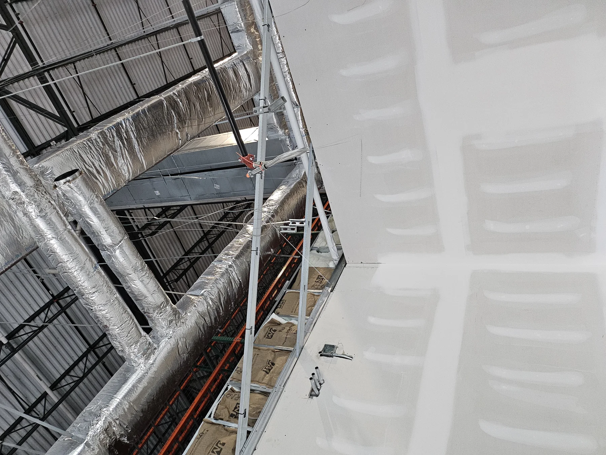
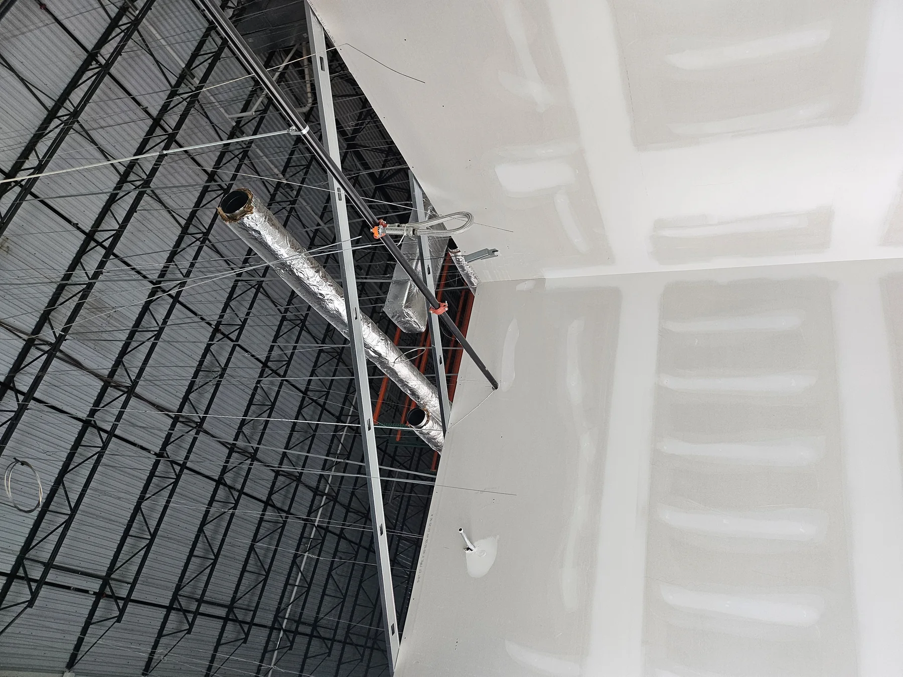

2000 Bishops Gate Blvd.Mount Laurel, NJ
2000 Bishops Gate Blvd. / Mount Laurel, NJ
Concrete demolition & pour-back
Concrete demolition, inspection coordination, slab preparation, and pour-back work.
Selected GMT work across commercial, industrial, concrete, demolition, interior fit-out, hospitality, and multi-location environments.
From industrial fit-outs and concrete work to demolition and phased renovations, GMT stays close to field execution and project coordination.
Active interior construction, field coordination, and phased fit-out work.

Demolition, interior renovation, field coordination, and ongoing construction progress.
Concrete demolition, inspection coordination, slab preparation, and pour-back work.
These images are tied to the named project source folders rather than generic construction imagery.


GMT has developed repeat relationships with general contractors, property owners, developers, and multi-location businesses across the Northeast and Mid-Atlantic.